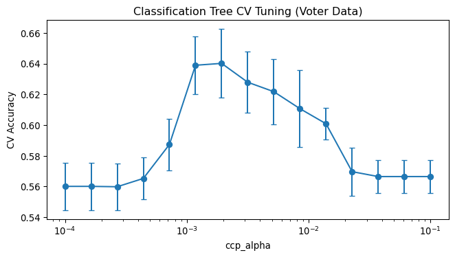
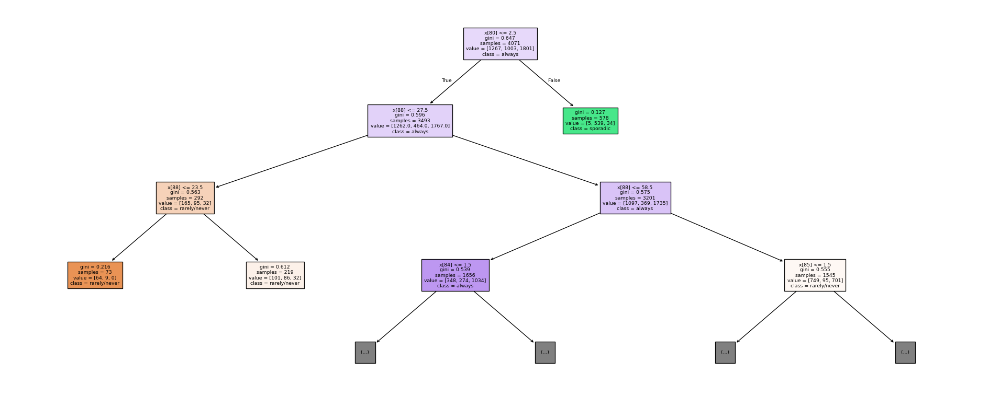
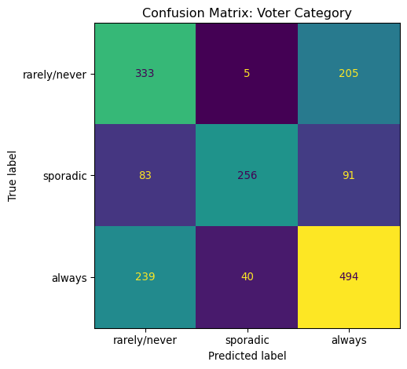

| Loading ITables v2.6.2 from the internet... (need help?) |
MATH 4025: Classification Trees
Dr. Eric Friedlander
Decision Trees for Classification
Classification Tree Predictions
- Same tree structure as regression trees — root node, internal nodes, terminal nodes, branches
- What changes is what we predict at each terminal node:
- Class label: most common class among training observations in that node
- Probability: proportion of each class at that terminal node
- And what we optimize when splitting…
Fitting Classification Trees
- Still use recursive binary splitting to grow a classification tree
- \(\hat{p}_{mk}\): proportion of training observations in the \(m^{th}\) region from the \(k^{th}\) class
- Can replace SSE with classification error rate: \[E = 1 - \max_k \left(\hat{p}_{mk}\right)\]
- Fraction of training observations that do not belong to the most common class
Gini Index
\[G = \displaystyle \sum_{k=1}^{K} \hat{p}_{mk}\left(1-\hat{p}_{mk}\right)\]
- Measure of node purity — small values indicate a node is predominantly a single class
- \(G \approx 0\): node contains mostly one class (pure)
- \(G\) is maximized when classes are equally mixed
Entropy
\[H = \displaystyle -\sum_{k=1}^{K} \hat{p}_{mk}\log\left(\hat{p}_{mk}\right)\]
- Also a measure of node purity — same interpretation as Gini
- Small values indicate a node is predominantly a single class
In Practice
- ISLR2 recommendation:
- Use Gini or entropy to decide where to split
- Use classification error rate to prune
sklearndefault:criterion='gini'- Also supports
'entropy'and'log_loss'(equivalent to entropy)
- Also supports
- Many implementations — always check the documentation!
Exploring Decision Trees with App
- Dr. F will split you into four groups
- On one of your computers connect to a TV and open this app
- Do the following based on your group number:
- 1: Choose plane on the first screen
- 2: Choose circle on the first screen
- 3: Choose parabola on the first screen
- 4: Choose sine curve on the first screen
- We will generate data from this population… do you think KNN, logistic regression, or a decision tree will yield a better classifier? Why?
Exploring Decision Trees with App
- Choose one of the populations
- Generate some data
- Fit a decision tree to the data and see how the different hyperparameters impact the resulting model:
- Complexity parameter (cp): the larger the number, the more pruning
- Minimum leaf size: minimum number of training observations that must be in a leaf
- Max depth: maximum number of splits before a terminal node
- Write down any interesting observations
Data Cleaning Side-Quest
Data: Voter Frequency
- Info about data
- Goal: Identify individuals who are unlikely to vote to help an organization target “get out the vote” efforts
Checking for Missing Data
na_summary = (voter_raw.isna().sum()
.reset_index()
.rename(columns={'index': 'column', 0: 'n_missing'})
.query('n_missing > 0'))
show(na_summary)| Loading ITables v2.6.2 from the internet... (need help?) |
Checking for -1 Values
neg1_counts = (voter_raw.drop(columns=['RespId', 'weight', 'Q1'])
.select_dtypes(include='number')
.apply(lambda col: (col == -1).sum())
.reset_index()
.rename(columns={'index': 'column', 0: 'n_neg1'})
.query('n_neg1 > 0'))
show(neg1_counts)| Loading ITables v2.6.2 from the internet... (need help?) |
How Should We Handle -1s?
- Seems like -1 means: question was asked but not answered / answer not selected
- Seems like
NAmeans: question was never asked (skip logic) - What should we do?
- A few options:
- Replace -1 with
"Not Answered"(treat as a category) - Replace -1 with
NaN - Replace -1 with
NaNand add indicator columns (e.g.,Q6_was_missing)- Can do this with
sklearn.impute.MissingIndicator - More sophisticated but adds many columns
- Can do this with
- Replace -1 with
Cleaning: Straight-Forward Stuff
voter_clean = voter_raw.drop(columns=['RespId', 'weight', 'Q1']).copy()
# Set ordered categoricals
voter_clean['educ'] = pd.Categorical(voter_clean['educ'],
categories=['High school or less', 'Some college', 'College'], ordered=True)
voter_clean['income_cat'] = pd.Categorical(voter_clean['income_cat'],
categories=['Less than $40k', '$40-75k ', '$75-125k', '$125k or more'], ordered=True)
voter_clean['voter_category'] = pd.Categorical(voter_clean['voter_category'],
categories=['rarely/never', 'sporadic', 'always'], ordered=False)Cleaning Q22
Q22
NaN 5350
4.0 116
2.0 107
6.0 100
7.0 86
1.0 27
5.0 19
3.0 19
-1.0 12
Name: count, dtype: int64Cleaning Q28
Q28_1
1.0 4049
-1.0 1248
NaN 520
Name: count, dtype: int64- -1 = not selected → treat as 0
NaN= question never asked
Cleaning Q29
Same pattern as Q28:
Cleaning Q31-Q33: Party ID
def _party_id(row):
q31, q32, q33 = row['Q31'], row['Q32'], row['Q33']
if q31 == 1: return 'Strong Republican'
elif q31 == 2: return 'Republican'
elif q32 == 1: return 'Strong Democrat'
elif q32 == 2: return 'Democrat'
elif q33 == 1: return 'Lean Republican'
elif q33 == 2: return 'Lean Democrat'
else: return 'Other'
voter_clean['Party_ID'] = voter_clean.apply(_party_id, axis=1)
party_order = ['Strong Republican', 'Republican', 'Lean Republican',
'Other', 'Lean Democrat', 'Democrat', 'Strong Democrat']
voter_clean['Party_ID'] = pd.Categorical(voter_clean['Party_ID'],
categories=party_order, ordered=True)
voter_clean = voter_clean.drop(columns=['Q31', 'Q32', 'Q33'])Final -1 Cleanup
Classification Trees in Python
Split Data
X_voter = voter_clean.drop(columns=['voter_category'])
y_voter = voter_clean['voter_category']
X_train, X_test, y_train, y_test = train_test_split(
X_voter, y_voter,
test_size=0.3,
stratify=y_voter, # maintain class proportions in each split
random_state=4025
)
print(f"Training: {X_train.shape[0]} obs | Test: {X_test.shape[0]} obs")Training: 4071 obs | Test: 1746 obsResponse Distribution
Preprocessing Strategy
Three groups of columns require different treatment:
| Group | Columns | Strategy |
|---|---|---|
| Numeric | ppage, Q6, numeric Qs |
Median imputation |
| Ordered categorical | educ, income_cat, Party_ID |
Mode imputation + OrdinalEncoder |
| Nominal categorical | race, gender, Q22, Q28_*, Q29_*, etc. |
Mode imputation + OneHotEncoder |
- Note: the R recipe also used
step_indicate_nato add missing-value indicator columns - Here we use simple imputation for clarity —
sklearn.impute.MissingIndicatorcan achieve the same effect
Building the Preprocessing Pipeline
ordered_cat_cols = ['educ', 'income_cat', 'Party_ID']
num_cols = X_train.select_dtypes(include=['int64', 'float64']).columns.tolist()
nom_cols = [c for c in X_train.columns
if c not in ordered_cat_cols and c not in num_cols]
preproc_voter = ColumnTransformer([
('num', Pipeline([
('impute', SimpleImputer(strategy='median'))
]), num_cols),
('ord', Pipeline([
('impute', SimpleImputer(strategy='most_frequent')),
('encode', OrdinalEncoder(handle_unknown='use_encoded_value', unknown_value=-1))
]), ordered_cat_cols),
('nom', Pipeline([
('impute', SimpleImputer(strategy='most_frequent')),
('encode', OneHotEncoder(drop='first', sparse_output=False, handle_unknown='ignore'))
]), nom_cols),
], remainder='drop')Define and Tune the Model
voter_folds = StratifiedKFold(n_splits=5, shuffle=True, random_state=4025)
param_grid_voter = {
'tree__ccp_alpha': np.logspace(-4, -1, 15),
}
voter_pipe = Pipeline([
('preproc', preproc_voter),
('tree', DecisionTreeClassifier(random_state=4025))
])
voter_grid = GridSearchCV(
estimator=voter_pipe,
param_grid=param_grid_voter,
cv=voter_folds,
scoring='accuracy',
return_train_score=True
)
voter_grid.fit(X_train, y_train)GridSearchCV(cv=StratifiedKFold(n_splits=5, random_state=4025, shuffle=True),
estimator=Pipeline(steps=[('preproc',
ColumnTransformer(transformers=[('num',
Pipeline(steps=[('impute',
SimpleImputer(strategy='median'))]),
['Q2_1',
'Q2_2',
'Q2_3',
'Q2_4',
'Q2_5',
'Q2_6',
'Q2_7',
'Q2_8',
'Q2_9',
'Q2_10',
'Q3_1',
'Q3_2',
'Q3_3',
'Q3_4',
'Q3_5',
'Q3_6',
'Q4_1',
'Q4_2',
'Q4_3',
'Q...
'Q29_6',
'Q29_7',
'Q29_8',
'Q29_9',
'Q29_10',
'race',
'gender'])])),
('tree',
DecisionTreeClassifier(random_state=4025))]),
param_grid={'tree__ccp_alpha': array([0.0001 , 0.00016379, 0.00026827, 0.0004394 , 0.00071969,
0.00117877, 0.0019307 , 0.00316228, 0.00517947, 0.00848343,
0.01389495, 0.02275846, 0.03727594, 0.06105402, 0.1 ])},
return_train_score=True, scoring='accuracy')In a Jupyter environment, please rerun this cell to show the HTML representation or trust the notebook. On GitHub, the HTML representation is unable to render, please try loading this page with nbviewer.org.
Parameters
Parameters
['Q2_1', 'Q2_2', 'Q2_3', 'Q2_4', 'Q2_5', 'Q2_6', 'Q2_7', 'Q2_8', 'Q2_9', 'Q2_10', 'Q3_1', 'Q3_2', 'Q3_3', 'Q3_4', 'Q3_5', 'Q3_6', 'Q4_1', 'Q4_2', 'Q4_3', 'Q4_4', 'Q4_5', 'Q4_6', 'Q5', 'Q6', 'Q7', 'Q8_1', 'Q8_2', 'Q8_3', 'Q8_4', 'Q8_5', 'Q8_6', 'Q8_7', 'Q8_8', 'Q8_9', 'Q9_1', 'Q9_2', 'Q9_3', 'Q9_4', 'Q10_1', 'Q10_2', 'Q10_3', 'Q10_4', 'Q11_1', 'Q11_2', 'Q11_3', 'Q11_4', 'Q11_5', 'Q11_6', 'Q14', 'Q15', 'Q16', 'Q17_1', 'Q17_2', 'Q17_3', 'Q17_4', 'Q18_1', 'Q18_2', 'Q18_3', 'Q18_4', 'Q18_5', 'Q18_6', 'Q18_7', 'Q18_8', 'Q18_9', 'Q18_10', 'Q19_1', 'Q19_2', 'Q19_3', 'Q19_4', 'Q19_5', 'Q19_6', 'Q19_7', 'Q19_8', 'Q19_9', 'Q19_10', 'Q20', 'Q21', 'Q23', 'Q24', 'Q25', 'Q26', 'Q27_1', 'Q27_2', 'Q27_3', 'Q27_4', 'Q27_5', 'Q27_6', 'Q30', 'ppage']
Parameters
['educ', 'income_cat', 'Party_ID']
Parameters
Parameters
['Q22', 'Q28_1', 'Q28_2', 'Q28_3', 'Q28_4', 'Q28_5', 'Q28_6', 'Q28_7', 'Q28_8', 'Q29_1', 'Q29_2', 'Q29_3', 'Q29_4', 'Q29_5', 'Q29_6', 'Q29_7', 'Q29_8', 'Q29_9', 'Q29_10', 'race', 'gender']
Parameters
Parameters
Parameters
CV Results
voter_results = pd.DataFrame(voter_grid.cv_results_)
fig, ax = plt.subplots(figsize=(7, 4))
ax.errorbar(voter_results['param_tree__ccp_alpha'],
voter_results['mean_test_score'],
yerr=voter_results['std_test_score'],
marker='o', capsize=3)
ax.set_xscale('log')
ax.set_xlabel('ccp_alpha')
ax.set_ylabel('CV Accuracy')
ax.set_title('Classification Tree CV Tuning (Voter Data)')
plt.tight_layout()
plt.show()
Select Best Model
Fit and Visualize Best Tree
best_voter_pipe = Pipeline([
('preproc', preproc_voter),
('tree', DecisionTreeClassifier(
ccp_alpha=voter_grid.best_params_['tree__ccp_alpha'],
random_state=4025
))
])
best_voter_pipe.fit(X_train, y_train)
fig, ax = plt.subplots(figsize=(20, 8))
plot_tree(best_voter_pipe.named_steps['tree'],
class_names=list(y_voter.cat.categories),
filled=True, max_depth=3, fontsize=7, ax=ax)
plt.tight_layout()
plt.show()
Interpreting the Tree
- Which features appear near the root?
- What does that tell us about predictors of voting behavior?
- Does this align with what you’d expect from domain knowledge?
Test Set Evaluation
voter_preds = voter_grid.predict(X_test)
print(f"Test Accuracy: {accuracy_score(y_test, voter_preds):.3f}")
fig, ax = plt.subplots(figsize=(6, 5))
ConfusionMatrixDisplay.from_predictions(
y_test, voter_preds,
display_labels=list(y_voter.cat.categories),
ax=ax, colorbar=False
)
plt.title('Confusion Matrix: Voter Category')
plt.tight_layout()
plt.show()Test Accuracy: 0.620